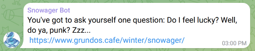

Snowager Bot
Snowager Bot is a Telegram bot which makes announcements three times per day.

Snowager Bot was made after the need arose for a bot that would send a reminder at specific intervals each day. The bot then provides a link to the related site (where the event in question is only active at the given times). Users can receive the reminder and follow the link to complete their tasks.
While more lightweight than its predecessor, Dragon Bot, Snowager Bot is very effective in its distribution of reminders. It uses the datetime module to check the current time. If the time is one of the windows specified, the reminder is sent.
In addition to the reminder, Snowager Bot features an ever-growing list of quips and quotes (primarily from movies and games). These are selected at random each time the bot sends a reminder. Users not only receive the reminder, but can enjoy a quote that changes each time.
This bot operates entirely using the Telegram API, but has the potential to be ported to other platforms, should the need arise.
This bot is a personal project for learning purposes. Feedback and suggestions are welcome. You can view the entire code here:
Snowager Bot on Github